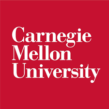
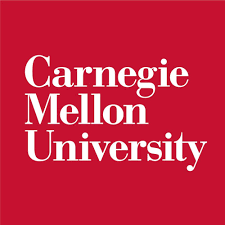

Yue Wang
Product Manager
👋I am an inspired product manager, curious learner, crazy music lover who play bass and do music production.
Glad you are here! Scroll down to know more about my work experience, education program, and the projects I am working on!
Work Experience
Innovation Labs Intern (Product Manager)
Electronic Arts
2024.5 - 2024.8
• Market research: Conducted competitive analysis, quantified potential revenue, analyzed and visualized player retention and time spent data with SQL and Tableau to support business case for EA’s first social mobile app.
• User Segmentation: Developed user segmentation by analyzing behavior data to develop five segments and
prioritized three based on the desire to socialize, positive impact on other players and openness to trying new
features. Led to creation of user stories.
• MVP and Experiment Design: Defined MVP and Figma prototypes by formulating PRD. Finished launch scope
and experiment design to identify key metrics and set targets.
Product Owner (Navigation Function)
Mercedes Benz
2023.7 - 2023.11
• User Experience Design: Enhanced the parking experience by designing integrated features for both vehicles and mobile apps and collaborating with engineers and vendors to complete the system design.
• Account System Design: Built up seamless personalization user experience by analyzing performance data and refining the personal information sync mechanism between Mercedes accounts and Amap account.
Growth/Monetization Product Manager
TikTok - Volcano Engine
2021.7 - 2023.7
• Product Development: Incubated developer-oriented SaaS products in observability, mobile client bug-fix and web deployment from 0 to 1 by working cross-functionally. Expanded product availability via SaaS, DevOps integration, OpenAPI and SDK.
• Product Monetization: Implemented pricing strategies by conducting market & competitive analysis and aligning with financial targets. Established and refined GTM strategy, identify scalable opportunities for commercial user growth, resulting in the acquisition of 10+ clients and $275K+ revenue within one year after official launch.
• Product Roadmap: Developed a roadmap and analyzed user feedback to design advanced service features for the engineering teams of Super Apps (e.g. RBAC), improving user satisfaction by 20%+.
• Agile Leadership: Led Agile transformation of international product team, improved quality and on-time delivery of projects and reduced cost for client delivery, leading to expansion of client relationships.
i18n Product Manager
TikTok - Lark
2020.1 - 2021.7
• 2B SaaS Product Incubation: Built the i18n content management platform by conducting competitive analysis, designing features, prototyping and testing. Launched MVP to reduce average task time from 2 weeks to 3 days.
• Data Analysis: Designed and built data dashboards with SQL and Python to evaluate new supported languages
and facilitate user feedback collection. Completed language prioritization and multi-lingual version feature design.
• Cross-functional Leadership: Managed language vendors by setting key metrics for performance review.
Increased supported languages on Lark from 2 to 16 within one year in collaboration with engineers and designers to support the overseas market growth.
Education
Master's Degree
Carnegie Mellon University
2024.1 - 2024.12
Product Management (MSPM)
Capstone: Launched the first AI-agent mobile game; Explore more possibilities of interaction and game design with embodied AI agents, including system prompt and framework definition.
Bachelor's Degree
Beijing Foreign Studies University
2016.9 - 2020.7
Swahili
Capstone: Led 3 CS-majored students to finish the development of Advanced Swahili Dictionary with ML models for content classification and recommendation. Completed the prototype design (with Figma) and embedding code in Python. Rated as one of the 4 excellent projects among 100+ projects.

 
